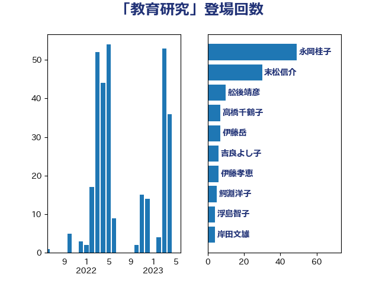

単語「教育研究」

| 永岡桂子 | 自由民主党 | 49 回 |
| 末松信介 | 自由民主党 | 30 回 |
| 舩後靖彦 | れいわ新選組 | 10 回 |
| 高橋千鶴子 | 日本共産党 | 7 回 |
| 伊藤岳 | 日本共産党 | 7 回 |
| 吉良よし子 | 日本共産党 | 6 回 |
| 伊藤孝恵 | 国民民主党 | 6 回 |
| 鰐淵洋子 | 公明党 | 5 回 |
| 浮島智子 | 公明党 | 4 回 |
| 岸田文雄 | 自由民主党 | 4 回 |
| 宮本岳志 | 日本共産党 | 4 回 |
| 大島敦 | 立憲民主党 | 4 回 |
| 金子恵美 | 立憲民主党 | 3 回 |
| 若松謙維 | 公明党 | 3 回 |
| 白石洋一 | 立憲民主党 | 3 回 |
| 田中英之 | 自由民主党 | 3 回 |
| 甘利明 | 自由民主党 | 3 回 |
| 本村伸子 | 日本共産党 | 3 回 |
| 高橋はるみ | 自由民主党 | 2 回 |
| 鈴木俊一 | 自由民主党 | 2 回 |
| 西銘恒三郎 | 自由民主党 | 2 回 |
| 西岡秀子 | 国民民主党 | 2 回 |
| 芳賀道也 | 国民民主党 | 2 回 |
| 横山信一 | 公明党 | 2 回 |
| 根本幸典 | 自由民主党 | 2 回 |
| 有村治子 | 自由民主党 | 2 回 |
| 新垣邦男 | 立憲民主党 | 2 回 |
| 掘井健智 | 日本維新の会 | 2 回 |
| 庄子賢一 | 公明党 | 2 回 |
| 小林鷹之 | 自由民主党 | 2 回 |
| 坂本祐之輔 | 立憲民主党 | 2 回 |
| 古賀千景 | 立憲民主党 | 2 回 |
| 勝部賢志 | 立憲民主党 | 2 回 |
| 高橋克法 | 自由民主党 | 1 回 |
| 長友慎治 | 国民民主党 | 1 回 |
| 谷公一 | 自由民主党 | 1 回 |
| 茂木敏充 | 自由民主党 | 1 回 |
| 臼井正一 | 自由民主党 | 1 回 |
| 緑川貴士 | 立憲民主党 | 1 回 |
| 竹内真二 | 公明党 | 1 回 |
| 秋野公造 | 公明党 | 1 回 |
| 田村智子 | 日本共産党 | 1 回 |
| 熊谷裕人 | 立憲民主党 | 1 回 |
| 森山浩行 | 立憲民主党 | 1 回 |
| 根本匠 | 自由民主党 | 1 回 |
| 早坂敦 | 日本維新の会 | 1 回 |
| 市村浩一郎 | 日本維新の会 | 1 回 |
| 尾身朝子 | 自由民主党 | 1 回 |
| 宮口治子 | 立憲民主党 | 1 回 |
| 宮内秀樹 | 自由民主党 | 1 回 |
| 加藤勝信 | 自由民主党 | 1 回 |
| 八木哲也 | 自由民主党 | 1 回 |